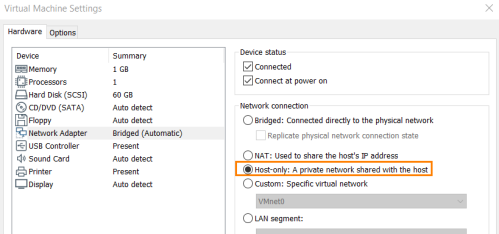

How setup Lab
How to setup the Lab
1.In both the victim and attacker machine:
2. Linux(attacker):
ifconfig
sudo dhclient -r eth0
sudo dhclient eth0
ifconfig
ping <windows-victimIP> #after point 3
3. Windows(victim)
ipconfig
netsh advfirewall set allprofiles state off
ipconfig
ping <Linux-attackerIP>
bibliography
https://www.notsosecure.com/pwning-with-responder-a-pentesters-guide/https://www.sikich.com/insight/using-multirelay-with-responder-for-penetration-testing/